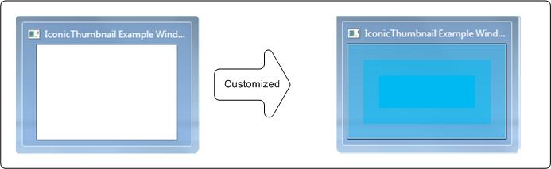

You can customize an iconic thumbnail and a live preview (or Peek preview) bitmap by using functions and messages that are introduced in the Windows 7 Desktop Window Manager (DWM) APIs.
Specifically, you use the DwmSetIconicThumbnail function and the WM_SENDICONICTHUMBNAILBITMAP message to customize an iconic thumbnail. You can also use the DwmSetIconicLivePreviewBitmap function and the WM_SENDICONICLIVEPREVIEWBITMAP message to set an iconic live preview bitmap.
For a sample application that uses the DwmSetIconicThumbnail function, see TabThumbnails sample.
The following illustration shows a default thumbnail transformed into a customized thumbnail.

| Requirement | Value |
|---|---|
| Minimum supported client | Windows 7 or Windows Vista with Service Pack 2 (SP2) and Platform Update for Windows Vista |
| Minimum supported server | Windows Server 2008 R2 or Windows Server 2008 with Service Pack 2 (SP2) and Platform Update for Windows Server 2008 |
| Minimum Windows SDK | Windows Software Development Kit (SDK) for Windows 7 |
To build the sample by using Microsoft Visual Studio (preferred method)
To build the sample by using the command prompt
msbuild TabThumbnails.sln.